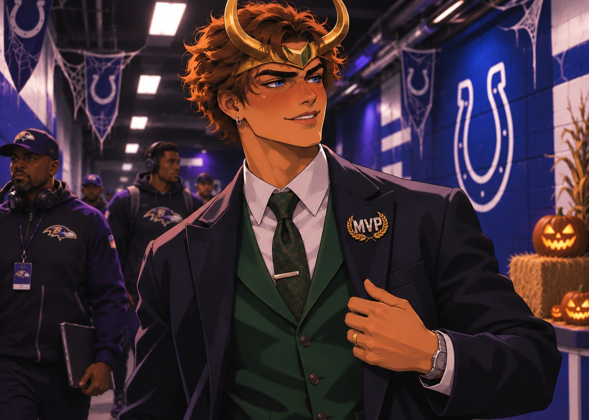
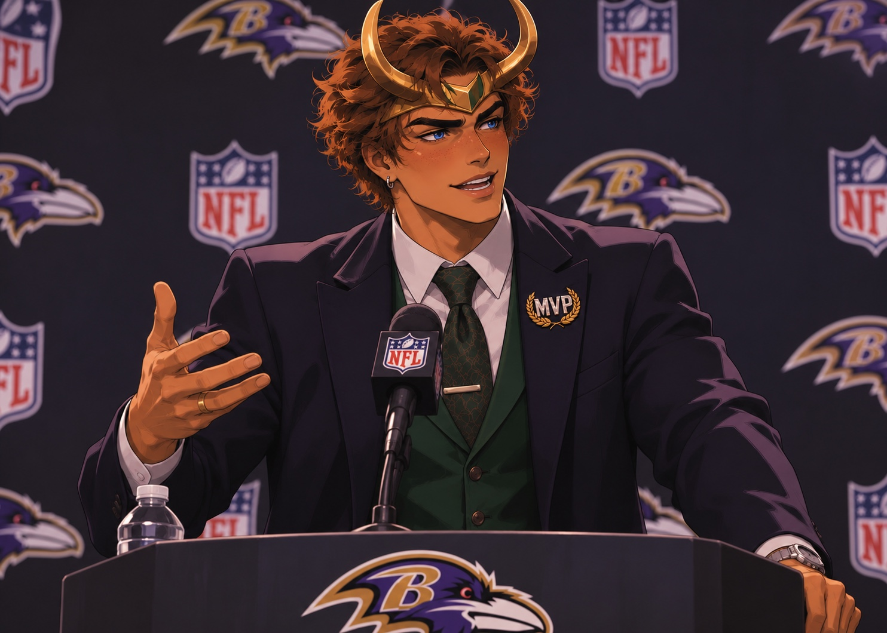
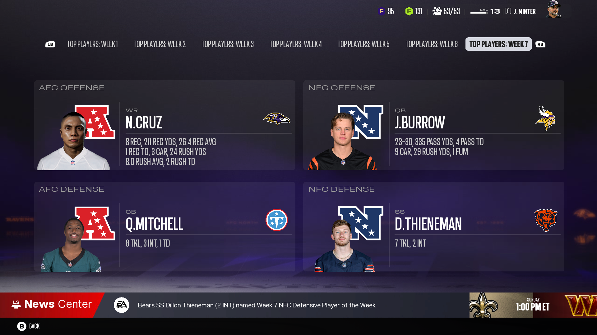
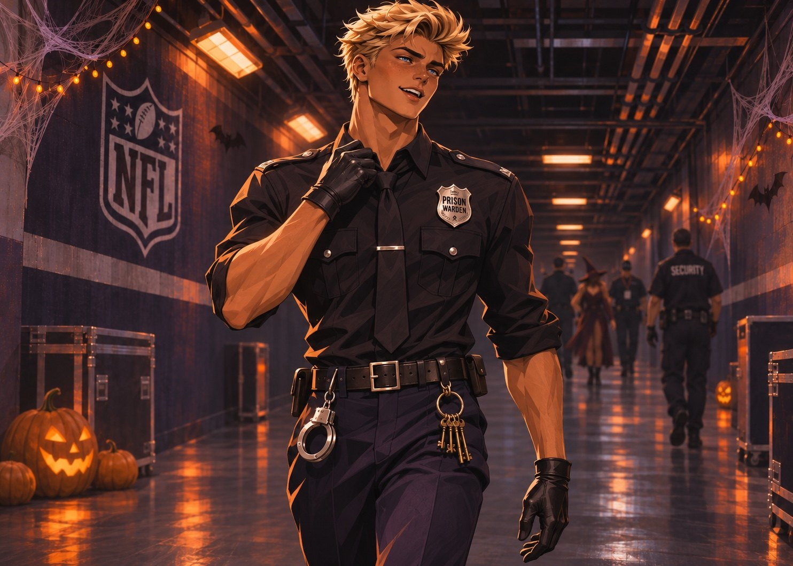

2027 REGULAR SEASON / WEEK 07 / HALLOWEEN EDITIONGOD OF
GOD OF
MISCHIEF.
One concussion scare. One MVP campaign joke. Three outrageous touchdowns. Nasir Cruz turned his comeback into a Halloween nightmare for Indianapolis, and he did it all in the first half.
BAL 28 / IND 14TEN 37 / NE 13GREEN BAY / BYE
WEEK 07 / OFFICIAL GAME RESULTSTWO WINS.
TWO WINS.
ONE BYE.
The Week 7 headlines belong to a comeback in Indianapolis and a Tennessee defense that cannot stop collecting takeaways. Green Bay rests.
BAL 28
FINAL / BALTIMORE AT INDIANAPOLISAll featured starters pulled after halftimeNasir: 235 yards, 3 total TD in the first half
14 IND
TEN 37
FINAL / TENNESSEE AT NEW ENGLANDThe shutout streak ends. The turnover machine does not.4 Patriots turnovers; 0 Titans turnovers
13 NE
GB BYE
WEEK 07 / NO GAMERyan Miller and Jahmyr Gibbs restNo Green Bay player stats this week
REST
HALLOWEEN ARRIVAL / INDIANAPOLIS / NICKNAME NC17THE CAMPAIGN
THE CAMPAIGN
STARTS IN THE TUNNEL.
The joke lands before the football even starts. Nasir walks into the Colts stadium dressed as Loki for President, except his campaign is for the NFL MVP award, and his own quarterback is the current frontrunner.

CAMPAIGN SEASON / ONE LOCKER ROOMNASIR
NASIR
FOR MVP.
Caleb Williams is No. 1 on the most recent supplied Madden MVP ballot. His favorite receiver is No. 2. So Nasir turns up wearing a tailored navy suit, a green vest, gold Loki horns and a prominent MVP lapel pin.
It is playful, not a manufactured locker room feud. The same quarterback Nasir is campaigning against is the person throwing him the football.
CALEB WILLIAMS MVP #1NASIR CRUZ MVP #2
The bigger news is that he is on the field at all. He left Week 6 after roughly five snaps because of a concussion, practiced Wednesday while still listed questionable, and returned to play against Indianapolis.
GAME ONE / BALTIMORE 28 / INDIANAPOLIS 14HALF A GAME.
HALF A GAME.
AN ENTIRE NIGHTMARE.
The only thing more absurd than Nasir Cruz’s box score is the clock: all of the featured first team offense came before halftime. The coaching staff sat the starters at the break in this franchise storyline.
RETURN STORY / HEALTH FIRST, THEN FOOTBALLFROM QUESTIONABLE
FROM QUESTIONABLE
TO UNBELIEVABLE.
Last week, a concussion cut Cruz’s day short. This week, the rookie returns, tears through Indianapolis and walks away with AFC Offensive Player of the Week. The performance is impressive because of what happened the previous Sunday, but no conclusion about concussion recovery should be drawn from a stat line.
Nasir’s complete first half line: 8 receptions, 211 yards, 1 receiving touchdown and 3 rushing attempts, 24 yards, 2 rushing touchdowns. That is 235 scrimmage yards and 3 touchdowns in two quarters. His longest catch goes for 72 yards, and he generates 90 yards after the catch.
Caleb Williams goes 13 of 16 for 262 yards, 2 passing touchdowns, 0 interceptions and a perfect 158.3 rating. Baltimore finishes the game with no turnovers. Indianapolis is limited to 169 offensive yards, including 54 rushing yards. Both teams score all their points in the first half, and the Ravens close out a 28 to 14 victory.
IMPORTANT GAME CONTEXT: Baltimore’s starters were taken out at halftime in this Madden Universe storyline. Nasir’s 211 receiving yards and Caleb’s 262 passing yards were all produced in the first half, not across four quarters.
ONE PLAYER. THREE SKILL SETS.
The 211 receiving yards showcase the hands and route deception. The two rushing touchdowns show strength and contact balance. The final touchdown catch shows outrageous body control and timing against two defenders.
16 ATTEMPTS. PERFECT RATING.
The media cannot tell the MVP story without Caleb. His 13 completions create 262 yards and two scores with no turnovers. The pair are building each other’s awards cases one connection at a time.
WEEK 07 / OFFICIAL GAMEPLAY CLIPSTHREE PLAYS.
THREE PLAYS.
THREE REASONS TO PANIC.
One rookie makes plays like an acrobat, a power runner and a high point specialist. The three supplied clips tell the story.
ACTUAL MADDEN GAME FILM / THREE SUPPLIED VIDEOS
THE DIVE. THE STIFF ARM. THE HEAD TAP.
These three MP4 files come directly from the franchise gameplay. Select play to watch; videos do not start automatically.
GAME FILM / CLIP 01
The diving catch
An acrobatic adjustment and full commitment to the football. The catch that reminds the defense exactly what Cruz can do in the air.
GAME FILM / CLIP 02
The stiff arm into the turf
This is not just a receiver avoiding contact. Cruz finishes a rushing play with a forceful stiff arm and reaches the end zone.
GAME FILM / CLIP 03
The last second head tap
A desperate throw near the break. Cruz rises over two defenders, brings it down and walks in for the score.
The third play was scored as a reception touchdown. Nasir also had two touchdowns as a runner, making three total.
POSTGAME PRESS CONFERENCE / INDIANAPOLIS / FICTIONAL RECREATIONTHE MVP PIN.
THE MVP PIN.
THE REAL ANSWER.
The rookie handles every question: his concussion return, three completely different scoring styles, a baffling halftime throw and whether he is challenging his own quarterback for MVP.

PRESS
THE FULL POSTGAME MEDIA SCRUM
Reporter (opening)
Nasir, you were questionable most of the week after the concussion. Now you have 235 scrimmage yards and three touchdowns in only the first half. Were you expecting anything remotely like this?
Nasir Cruz (shaking his head)
Nah. Not even close, man. I was just excited to be back out there. Last week was rough, just watching everybody else play. Today I wanted to go do my job. I did not think I was about to do all that in two quarters.
Reporter (impressed)
You made an acrobatic diving grab, then absolutely planted a defender with a stiff arm, then went up over two guys and basically head tapped them for that last touchdown. How do you have that kind of versatility?
Nasir Cruz (laughing)
I really don’t know. That is the funny part. I feel like sometimes the game just asks you a question, and you gotta answer it. Ball is low? Go get it. Somebody trying to tackle you? Run through it. Two dudes in the air? Guess I gotta jump higher.
Reporter (pressing)
Take us through that last touchdown. The clock was almost out. Why not just kneel and go to halftime? What was even the play call?
Nasir Cruz (genuinely surprised)
Bro, I thought we were taking a knee too! I was surprised myself. Then Coach tells Caleb, if the play breaks down, just chuck it to Cruz. So I am standing there like... for real? And Caleb actually throws it.
Reporter (in disbelief)
Coach really said that? Just throw the ball to you if it breaks down?
Nasir Cruz (grinning)
Pretty much. I look up, I see two defenders, and I think, well, I cannot let Coach look crazy now. So I went up. Next thing I know, touchdown.
Reporter (serious)
How does that feel? First, that you can execute something like that, and second, that your head coach trusts you enough to give Caleb that instruction?
Nasir Cruz (reflective)
That means everything, honestly. I am still a rookie. I have not even played a full NFL season. For Coach to believe in me that much, and for Caleb to trust me with the ball in that situation, I have to earn that trust every day. It makes me want to be even better for them.
Reporter (teasing)
All right, about the costume. You walked in dressed as Loki with that MVP campaign pin. Caleb is first in the MVP race and you are second. Are you basically saying you deserve it more than your own quarterback?
Nasir Cruz (smirking)
Hey, democracy, man. Let the people decide.
Reporter (pushing)
But seriously. Are you campaigning against Caleb?
Nasir Cruz (earnest)
For real, though, I am there because of Caleb, and he is there because of me. We are helping each other’s case. So whichever one of us wins, it is a win for us. That is my guy. Love him. But I would be lying if I said I would not love to win it, even over Caleb. I mean, when is the last time a non quarterback won?
Reporter (quickly)
Adrian Peterson, 2012.
Nasir Cruz (nodding)
Exactly. And I do not think a wide receiver has ever won it. Hopefully I can be the first and break that record. But like I said, let the people decide. None of that changes how I perform. I am here to play football and win with my boys.
Reporter (final question)
Are you and Caleb going to keep joking about that MVP race?
Nasir Cruz (laughing)
He keeps throwing me the football like this, he might end up running my campaign for me.
WEEKLY AWARD / AFC OFFENSIVE PLAYER OF THE WEEKTHE CAMPAIGN
THE CAMPAIGN
HAS RECEIPTS.
A Halloween gag becomes a plausible football conversation. Nasir’s all around dominance earns him the Week 7 AFC Offensive Player of the Week award.

235 YARDS. 3 TDS. ONE HALF.
8 REC / 211 REC YDS / 1 REC TD
3 CAR / 24 RUSH YDS / 2 RUSH TD
1. CALEB
2. NASIR.
The most recent MVP board provided still shows Caleb Williams in first and Nasir in second. Both play for the Ravens. Their production is an argument for the connection, not proof of locker room resentment.
GAME TWO / TENNESSEE 37 / NEW ENGLAND 13 / SIMULATEDNO SHUTOUT.
NO SHUTOUT.
NO MERCY.
Tennessee’s string of consecutive shutouts ends. But the Titans force four turnovers, protect the ball and beat the Patriots by 24 points.

FORT KNOX / HALLOWEEN ARRIVALWELCOME
WELCOME
TO THE LOCKDOWN.
A prison warden. A badge. Handcuffs. A ring of keys. Knox did not need to explain the costume: for opposing receivers, his side of the field has felt like a locked cell all season.
The theme fits the résumé. No receiver has cleared 50 yards against Knox's individual coverage through seven weeks, and Tennessee has just forced four turnovers in another convincing win. The Titans surrendered 13 points in New England, but their grip on games remains unmistakable.
Halloween may be over after the tunnel walk. For receivers assigned to Fort Knox, the lockdown is still in effect.
THE WARDEN IS ON DUTY. NO EASY RELEASES.
FORT KNOX / A QUIET BOX SCORE, A LOUD RESULTTHE STREAK ENDS.
THE STREAK ENDS.
THE DEFENSE DOESN’T.
New England is the first opponent in three weeks to score on Tennessee, but its offense gives the ball away four times. Patriots quarterback Tyler Shough finishes 25 of 48 for 279 yards, no passing touchdowns and four interceptions. New England actually gains more offensive yards than Tennessee, 364 to 310, but the turnover margin decides which team controls the scoreboard.
Lachlan Knox logs five tackles, including two solo and three assisted tackles, plus one tackle for loss. He is not credited with an interception or pass deflection. For a corner gaining fame as Fort Knox, this is the kind of low glamour game where the collective defense still owns the headlines.
Jaxson Dart goes 20 of 34 for 190 yards, three passing touchdowns and no interceptions. Rookie running back Tavarius Seawright carries 13 times for 92 yards. A.J. Brown adds a receiving touchdown while E. Ayomanor catches two. Tennessee moves to 7 wins and 1 loss.
HONEST GAME RECAP: The Titans game was simulated. Knox’s Halloween tunnel arrival image is featured above, but no Tennessee gameplay clip or player interview was supplied. The game recap uses the recorded stats rather than inventing filmed plays or quotes.
GAME THREE / GREEN BAY PACKERS / WEEK 7 BYENO GAME.
NO GAME.
THE DEBATE RESTS.
Ryan Miller does not take a snap this week. Neither does Jahmyr Gibbs. The Packers get a bye following their narrow Week 6 win over Detroit.
BYE WEEK / NO FAKE GAME STATSGREEN BAY: RESTING.
Ryan enters the break with 1,055 passing yards, seven passing touchdowns and three interceptions through six games. The ongoing media question about how much of the offense he can carry stays alive, but this week supplies no new evidence either way.
MONDAY MORNING / ESPN FIRST TAKE / FICTIONAL PANELHIS BEST WEAPON?
HIS BEST WEAPON?
EVERY WEAPON.
The desk debates Cruz’s ceiling, Caleb’s perfect passer rating, the concussion return, and the two MVP candidates who happen to share a locker room.
ESPN
FIRST TAKE / THE MONDAY ARGUMENT
Shae Cornette (introducing)
We have to start with the fact this was a return from a concussion. Nasir Cruz had 235 scrimmage yards and three touchdowns in the FIRST HALF against Indianapolis. Are we watching something historically unusual?
Stephen A. Smith (raising his voice)
HISTORICALLY unusual? Shae, this is absurd! That young man came into the stadium dressed like Loki campaigning for the MVP, then played like the defense was part of the costume! Eight catches, 211 yards, two rushing touchdowns, all in two quarters!
Ryan Clark (analytical)
What impresses me is not just the numbers. Watch the three plays. The dive takes body control. The stiff arm takes physicality. The jump over two defenders takes timing, confidence and elite hands. There are receivers who have one of those traits. He is putting all three on film.
Dan Orlovsky (pushing back)
And I am not letting everyone skip Caleb Williams. A perfect passer rating. Thirteen completions in sixteen attempts. Two touchdowns and no picks. This is a quarterback executing at an extraordinary level, and Nasir is the finish to those plays.
Stephen A. Smith (interrupting)
AND NASIR IS MAKING THAT QB LOOK GOOD! We can praise both! That is exactly why they are first and second in the MVP race!
Ryan Clark (cautioning)
And let us keep the concussion conversation straight. A player returning and performing well does not mean this was a minor injury. The story is the on field performance after he returned, not that he should have rushed back.
Shae Cornette (closing)
Tennessee wins again, 37 to 13, and forces four turnovers, even though New England finally scores. The Packers are off this week. But in Baltimore, the biggest rivalry might be two MVP candidates helping each other.
NIGHTCAP / SHANNON SHARPE AND CHAD JOHNSON / FICTIONAL EPISODEMEGATRON MEETS
MEGATRON MEETS
JERRY RICE?
Unc and Ocho cannot believe what they watched, and the biggest punchline is that the rookie barely played half a football game.
NIGHTCAP
UNC & OCHO / TOO MANY SKILL SETS
Shannon Sharpe (shouting)
OCHO! I need you to explain something to me. How the hell this young man catch a ball diving, run through a defender like Derrick Henry, and then jump over TWO dudes like that?
Chad Johnson (laughing)
Unc, I been telling you! That is route running and ball tracking like Jerry Rice, and when the ball goes in the air, he looking like Megatron!
Shannon Sharpe (amused)
Somebody put Megatron and Jerry Rice together, handed the result some Loki horns, and sent him to Indianapolis!
Chad Johnson (excited)
And he did all that before halftime, Unc! That is what is crazy. You watching it thinking he got a whole game to put up numbers. Nope. They sat him at the half!
Shannon Sharpe (mock disbelief)
And they said Coach told Caleb, if the play breaks down, throw it to Cruz? Ocho, if a coach tells me that, I am quitting the defense. What is my game plan supposed to be?
Chad Johnson (grinning)
Double him? He jump over both. Tackle him? He stiff arm you into the lawn. I do not know, Unc. I am glad I am retired!
Shannon Sharpe (turning serious)
Now that MVP pin? The joke is funny, but we gotta ask the real question. When the QB and receiver are both in this race, who gets the credit?
Chad Johnson (firm)
Both of them. If Caleb did not put it there, Cruz could not catch it. If Cruz did not do that ridiculous stuff, Caleb do not have the same highlight reel. Let the people decide, just like the young man said.
Shannon Sharpe (laughing)
Nasir for MVP, Caleb for MVP. Baltimore might have two candidates and one Super Bowl dream. That is a nice problem to have!
REGULAR SEASON ARCHIVE / UPDATED THROUGH WEEK 07THE MASTER
THE MASTER
RECORD.
Seven weeks of franchise storylines, with Green Bay on its bye. Swipe to see all recorded weeks, including the first half explosion in Indianapolis.
LIVE ARCHIVE / VERIFIED GAME NUMBERS
2027 Season Master Tracker
Seven NFL weeks completed. Green Bay had its bye in Week 7. Swipe sideways for the full history.
07RECORDED
SCROLL SEASON HISTORYW1 TO W18 →
| PLAYER / STAT | W1 | W2 | W3 | W4 | W5 | W6 | W7 | W8 | W9 | W10 | W11 | W12 | W13 | W14 | W15 | W16 | W17 | W18 | SEASON TOTAL |
|---|---|---|---|---|---|---|---|---|---|---|---|---|---|---|---|---|---|---|---|
Nasir “Nas” CruzBAL · WR #17REC / YDS / REC TD | 18 / 135 / 45 rush, 44 yds, 1 TD | 3 / 30 / 0simulated game | 12 / 148 / 2three drops, loss | 5 / 62 / 1Las Vegas, win | 16 / 316 / 3Rookie yardage record | 1 / 12 / 0Concussion, ~5 snaps | 8 / 211 / 13 rush / 24 yds / 2 TD · 1st halfNEW THIS WEEK | · | · | · | · | · | · | · | · | · | · | · | 63 REC / 914 YDS / 11 REC TD3 confirmed rush TD · 14 total TD |
Ryan MillerGB · QB #11CMP / ATT · YDS · TD / INT | 4 / 13 · 800 TD / 1 INT | 24 / 35 · 3202 TD / 0 INT | 20 / 30 · 2313 TD / 0 INT | 21 / 32 · 1501 TD / 0 INT | 8 / 11 · 1191 TD / 1 INT · Gibbs back | 8 / 15 · 1550 TD / 1 INT · Gibbs: 3 rush TD | BYE WEEKGreen Bay did not playNEW THIS WEEK | · | · | · | · | · | · | · | · | · | · | · | 85 / 136 · 1,055 YDS7 PASS TD · 3 INT · 6 GAMES |
Lachlan “Lockie” KnoxTEN · CB #1TOTAL TKL · PD · INT | 3 TKL0 PD · 0 INT | 5 TKL0 PD · 1 INT | 5 TKL0 PD · 0 INT | 2 TKL1 PD · 0 INT | 1 TKL3 PD · 0 INT · Chase matchup | 5 TKL3 solo · 2 assisted · 0 PD · 0 INT | 5 TKL · 1 TFL2 solo / 3 assists · 0 PD / 0 INTNEW THIS WEEK | · | · | · | · | · | · | · | · | · | · | · | 26 TKL · 4 PD1 INT · 7 GAMES · 1 TFL IN W7 |
Week 6 box scores are supplied Madden 27 franchise results. Weeks 1 through 5 retain the established archive. Future games remain blank until played.
WHAT WE KNOW AFTER SIX
THE STATE OF THE UNIVERSE
BALTIMORE / NASIR CRUZ
55 / 703Receptions and receiving yards through six tracked games, with 10 receiving touchdowns. Week 6 ended early with a concussion after approximately five snaps.
TENNESSEE / LOCKIE KNOX
21 / 4Combined tackles and passes defended through six games, plus one interception. Tennessee has held consecutive opponents scoreless.
GREEN BAY / RYAN MILLER
7 / 3Passing touchdowns and interceptions through six games. 1,055 passing yards and six tracked wins, with more questions about the offense built around Gibbs.
UP NEXT / WEEK 08THE COSTUMES
THE COSTUMES
COME OFF.
What stays is the production. Baltimore has two MVP candidates and another win. Tennessee keeps winning the turnover battle. Green Bay returns from its bye with the Ryan Miller conversation still waiting.
The Week 8 chapter arrives when the next Madden results, photos and gameplay are available.
RETURN TO MADDEN UNIVERSE HOME